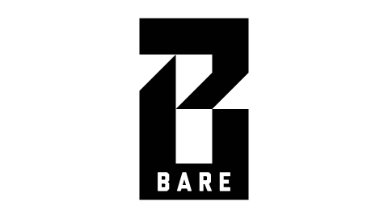

BARE
Established in 2007, BARE Magazine is a student-run publication at UC Berkeley that focuses on fashion, lifestyle, and art. They produce a print magazine each semester as well as run the BARE Blog. In 2012, the editors approved a new logo and identity.


The rebrand was the result of BARE’s continued expansion into the arts—food, music, and other culture—and was pushed for by the BARE layout design team (of which I was a part). Anything to replace what was reminiscent of the Sears wordmark.
The new logo has two versions: a stylized B and a full version with “BARE” across the bottom stroke.
The mark was designed with the ability to be used with a variety of overlay textures, as shown on their Street Style blog. It also scales down well to icon applications, and is more instantly identifiable.
The new BARE logo on magazine covers@baremagazine">
On advertising flyers@baremagazine">
On stickers@baremagazine">
Since its adoption, the logo has built up equity and recognition, helping to grow BARE as a brand. As its designer, it’s been rewarding to see. Each year, succeeding classes of BARE designers are finding novel ways to utilize the logo, and I look forward to seeing what they’ll come up with next.